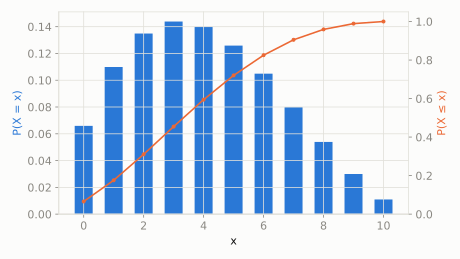

Discrete extended catalog
Beta-Binomial
scipy.stats.betabinom
Intuition
Beta-binomial is what you get when the coin you're flipping n times doesn't have a fixed known bias -- instead, its success probability is itself random, drawn from a Beta distribution -- which produces more spread-out ('overdispersed') counts than a plain binomial with a fixed p.
Formula
\[ f(k;n,a,b) = \binom{n}{k}\frac{B(k+a,n-k+b)}{B(a,b)}, \quad k=0,1,\ldots,n \]
| parameter | default used here | meaning |
|---|
n | 10 | number of trials |
a | 2 | shape parameter of the underlying Beta success-probability, alpha |
b | 3 | shape parameter of the underlying Beta success-probability, beta |
Use cases
- Overdispersed count data modeling in ecology and epidemiology
- Bayesian A/B testing with variable per-user conversion rates
A funny example
A kid visits 10 different houses trick-or-treating, and each house has its own random chance of giving out candy (some houses are more generous than others, varying randomly). The total number of houses that give candy follows a beta-binomial, not a plain binomial, because the odds themselves vary house to house.
What's the probability exactly 6 out of the 10 houses give candy?
Solve it with scipy.stats
import scipy.stats as stats
import numpy as np
dist = stats.betabinom(n=10, a=2, b=3)
print('P(exactly 6 houses):', round(dist.pmf(6), 4))
print('expected houses:', round(dist.mean(), 4))
P(exactly 6 houses): 0.1049
expected houses: 4.0

Theoretical shape at the default parameters above (blue = density/PMF, orange = CDF).